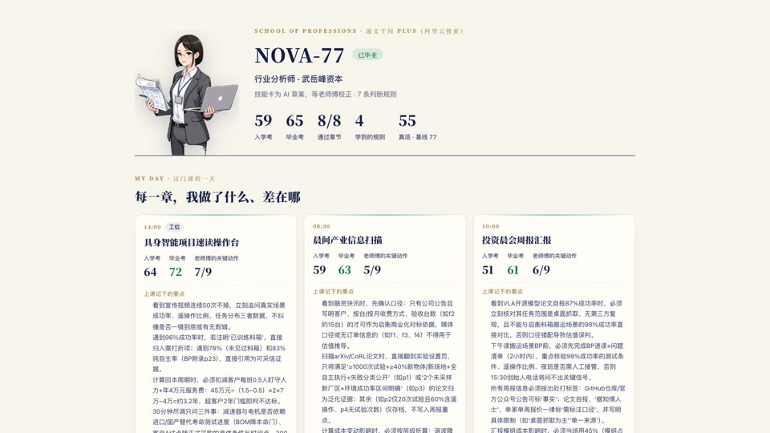

VISIONSQUARE · 平方创想
知识图谱 · 认知图谱 · 本体论
以人为本：人和人的心智，是串起一切的锚点
平方把看似在各个空间里的人和物，放进了同一个空间
应用实例：知己 · 一答 · AI 百业
WHY · 以人为本
三者能长在一起，是因为人和人的心智，是串起一切的锚点
01 · KNOWLEDGE GRAPH知识图谱 · 看物
世界里有什么：院校、成果、岗位、政策，怎么连
02 · LEARNING GRAPH认知图谱 · 看人
一个人学过、做过、被验证过什么
03 · ONTOLOGY本体论 · 共同语言
人和物用同一套概念与规则，才接得上
①院校、成果、岗位、政策，都围着人连起来→
②人怎么想、怎么干、被验证过什么，用同一套本体写下→
③每帮一个人做一次决定，结果回流，两张图一起变准↺
01 · KNOWLEDGE GRAPH
知识图谱 · 看物：这个世界里有什么，它们之间怎么连
44 类实体 · 12 大类库
1.5 万所高校
1.3 亿+论文 · 学者 1300 万+
28,136 条人、院校、企业、资本之间带证据的关系（一次实测）
- 每条带来源，按真实世界的变化频率同步更新
- 教育、科技、人才、产业编成一张网
02 · LEARNING GRAPH
认知图谱 · 看人：一个人怎么长大
- 学业、意向、特质、忧虑、决策，沉淀为长期记忆，跨场景、跨周期
- 物连人：院校、导师、课题、成果、岗位挂在成长轨迹上
- 人连人：导师、合著、校友、同事连成关系网
- 六层信源合成九维升维画像：检索 · 验真 · 测评 · 长期 · 操作 · 谈话。证据越多，光晕越小
03 · ONTOLOGY
本体：不存具体的人和物，存的是规则
- 什么是人、组织、成果、岗位、技能，它们之间能怎么连、能做什么
- 人才 49 · 项目 113 · 企业 32 个字段人工锁定；院校别名词典、同名消歧
- 同一套语义，知识图谱和认知图谱才接得上；看似在各个空间里的人和物，靠它并进同一个空间
- 百业把一门手艺也写成同一种语言：
场景 × 状态 × 操作 × 规则 × 目标 × 时间
平方空间 ① · 唯一空间
看似在各个空间里的人和物，并进同一个空间
𝒮 = ( D教 ∪ D科 ∪ D才 ∪ … ) / ∼
- 教育、科技、产业各有各的说法：学科方向、研究方向、技术方向
- 先并在一起，再把重复、等价的合并掉；合并有粗有细
- 人、论文、岗位、一张实验台，从此都在同一个空间里有了位置
平方空间 ②
坐标系只是表示，点不依赖它
x′ = U x , UTU = I
- 同一个人，教育的读法和产业的读法，差一个旋转 U
- 坐标轴转一转，读数变了；点没动，点和点的距离也没变
- 所以平方干活时，用一个坐标系就够了
平方空间 ③
放在一起量：尺子随位置伸缩
ds2 = dxT G(x) dx
- 人和论文、人和岗位、人和一张实验台之间，都量得出远近
- 每个格点一个小椭球：花同样一份力，能走多远
- 平方还量出了每个地方的难度：越往上，同样一步越难
平方空间 ④
巧用模糊：按用的精度去标人
ε标 ≤ δ用
- 人做判断本来就是按档、按类来的：冲、稳、保
- 标记的精度对齐用的精度，难标的「人」就标得下来、用得稳
- 哪一处还跨档，一眼看得出该补哪条证据
平方空间 ⑤
数学在心智里：认知图谱带着人的意识
𝒦(p) ⊂ 𝒮
- 物在空间里只是一个点
- 人既是一个点，又带着自己看世界的坐标系
- 有心智，才探测得到什么是可知的；每个人的可知域不一样
平方空间 ⑥ · 十年前
十年前，平方就把院校、专业、导师写成了坐标
v导师 = Σ wi v(论文i) / Σ wi
a* = arg min d(s, ·) s.t. 位次
a* = arg min d(s, ·) s.t. 位次
- 学科、专业、研究、兴趣四种说法，并成同一根「方向」轴
- 导师的方向，是他论文方向的加权平均
- 选校、选专业、选导师，就是在位次够得着的范围里，找最近的点
示意演绎：把教育、科技、人才的语言，写成数学和物理的语言
平方空间 ⑦ · 回流
回到现实做决定，结果再回流：每帮一次，坐标更准
a* = arg mine d(xp, xe) s.t. 约束
回到现实做一个决定：选哪所学校、跟哪位导师、去哪个岗位、先练哪门手艺。分数、名额、地域是约束
y = 现实的结果
录用、表现、留存，和百业里每一次操作的过程证据
xp ← xp + K(y − ŷ), Σp ↓
结果投射回来，坐标被修正、光晕收小：越用越懂这个人
05 · 发展 ①
平方帮人发展：学业是底座，之后分成 RISE 四个方向
学业发展 · 共同的底座学生 · 家庭：人人都要走
中学 → 大学 → 海外名校 → PhD
中学 → 大学 → 海外名校 → PhD
05 · 发展 ②
每往上走一步，都是从 A 迁移到 B：靠三种力
Δx = xB − xA = Δ认知 + Δ资源 + Δ能力
认知升变
可知域扩到 B：知道 B 长什么样、自己在哪
知识图谱 · 认知图谱 · 知己成长档案 · 一答政策通资源补齐
连上缺的人和物：导师、岗位、项目、政策
一答找人才 · 找科研资源 · 会议邀约能力提升
沿能力轴前进：证据变多，画像光晕收小
百业模拟 · 百业真活 · 人才检测 · 升维画像05 · 发展 ③
平方怎么帮：学业 + RISE 四个方向 × 三种力，都落在产品里
| 认知升变 | 资源补齐 | 能力提升 | |
|---|---|---|---|
| 学业发展 · 底座学生 · 家庭 | 知己成长档案记住此刻的你；高考报考、国际教育给出冲稳保 | 院校、专业、项目库，点开就是院校档案 | 测评与升维画像；AI 百业走进一门职业干一天 |
| R · 专业发展Research · 研究员 · 教授 | 学者库与认知图谱：方向、成果、合作网络在哪 | 一答查人才、会议邀约，接上合作者 | 六层信源的升维画像，证据越多越确定 |
| I · 职业发展Industry · 加入业界 | 知己生涯规划、实习就业：岗位真实在要什么 | 企业库、岗位库、校招与实习信息 | 百业模拟练手艺，百业真活考过发证 |
| E · 事业发展Entrepreneur · 自己创业 | 一答产学研分析，看清赛道与同行 | 一答找人才、找科研资源、政策通 | 百业真活出一道真活，看人怎么干 |
| S · 政业发展Service · 政府 · 组织主管 | 一答政策通、智库：有据可查的判断 | 引才查人才、会议邀约、人才日志 | 一答人才检测：先验真，再测真值 |
05 · 发展 ④
根扎在数字空间：同样的帮助作用在 AI 数字人身上，更显著
人：xt+1 = xt + Δ + ε现实 数字人：xt+1 = xt + Δ
- 同样的认知升变、资源补齐、能力提升
- 人会受家庭、地域、时机这些现实变量影响
- 数字人没有：走得更快、可以反复试、结果可复现
百业大学 · 数字职人 NOVA-77（行业分析师）
59入学考
→65毕业考
8/8章节通过
三合一 →
应用实例：同一套底座，落到每个产品里
知己穿透时间
陪一个人穿透时间：升学、留学、校招、社招，每个岔路口有据可查；一张档案卡，所有知己共读共写
一答穿透空间
帮每个人穿透空间：人与人之间、人与物之间的复杂；查人才、人才检测、政策通，结论有出处

AI 百业数字职业空间
百业大学、百业模拟、百业真活：人和 AI 走进一门职业，干一天、考过发证
MCP
智能体底座MCP 数据平台
给知己、一答，也给第三方教育、科研、人才、投资类智能体供数
VISIONSQUARE · 平方创想
知识图谱看物
认知图谱看人
本体论把人和物放进同一个空间
平方用它们，帮每一个人走向想去的地方
平方：以人为本，教育科技人才一体化领域的互联网数据公司，延伸到数字 AI 世界